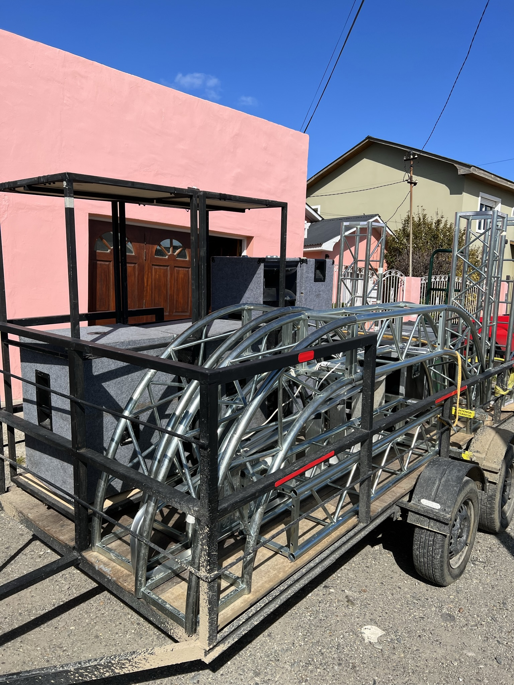
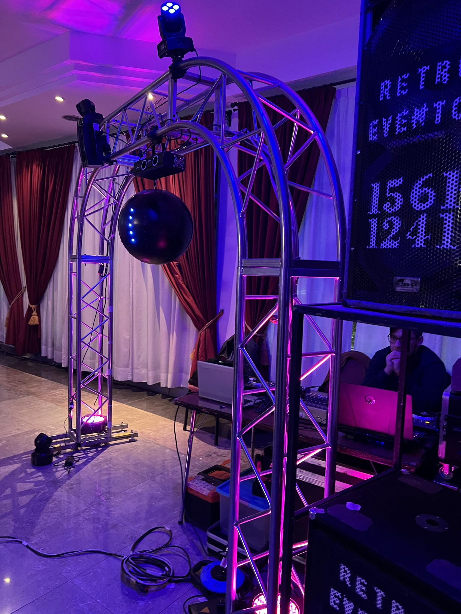
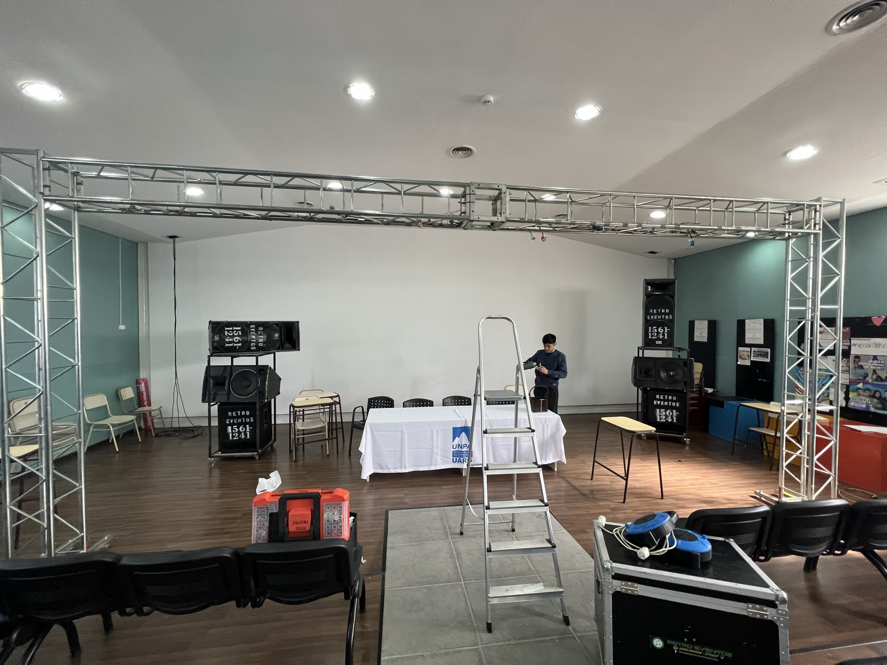
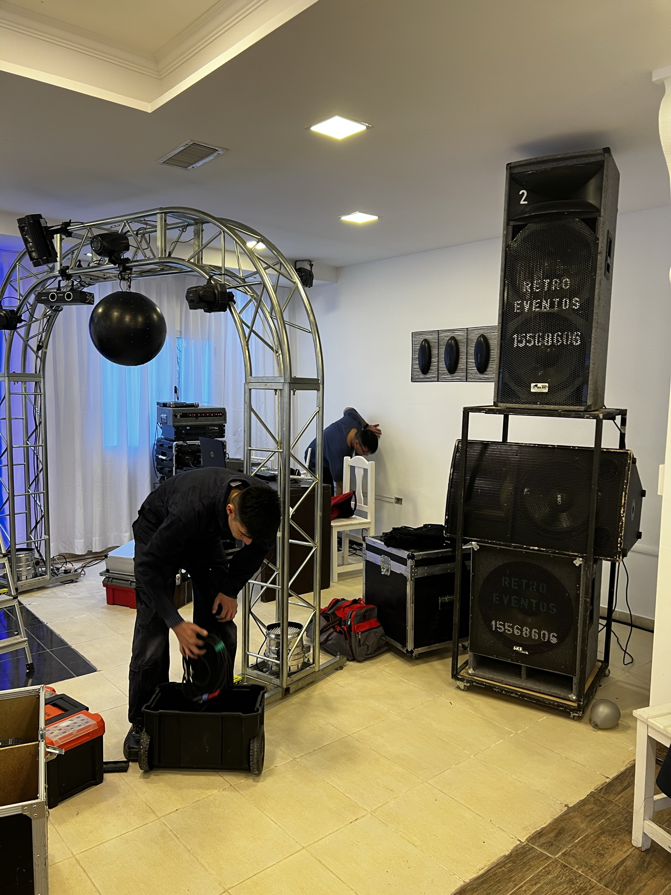
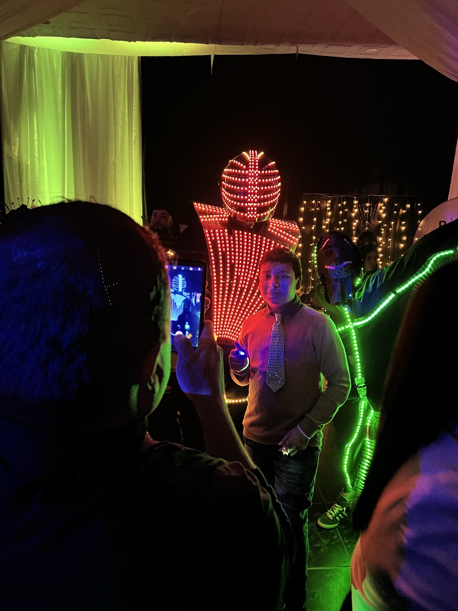

Este servicio contiene lo básico del paquete audiovisual. El servicio de sonido incluye 2 cajas acústicas de sonido de 15' y 2 subwoofer de 18' (previamente calculado para espacios con capacidad para 100 invitados aproximadamente), 2 microfonos inalámbricos, racks de sonido, controladores, consolas y otros equipamientos. El servicio de iluminación incluye luces LED montadas en estructura "truss" metálica tipo arco curvo simple para iluminación de pista de baile (láser, mini cabezales móviles, etc.). El servicio de proyección incluye proyecciones en pantalla de tela "back-front", videos musicales a elección del cliente (durante la cena), historias de vida y/o karaoke. El servicio básico no incluye animación - locución.
 Este servicio contiene servicios de sonido, iluminación, proyección, organización, animación - locución, ambientación lumínica, show LED y ceremonias de ingreso especiales. El servicio de sonido incluye 2 cajas acústicas de sonido de 15", 2 subwoofer de 18" y 2 cajas acústicas de 15" para refuerzo de graves (previamente calculado para espacios con capacidad para 150/300 invitados aproximadamente), 2 microfonos inalámbricos, racks de sonido, controladores, consolas, maquina de humo, maquina lanza papel picado. El servicio de iluminación incluye 2 sistemas de iluminación LED. El primer sistema estará montado en estructura "truss" metálica tipo arco curvo o ampliado para iluminación de pista de baile (láser, mini cabezales móviles, y esfera graficadora). El segundo sistema dará vida a la ambientación lumínica parcial delsalón (mesa principal, rincón de fotos, barra de tragos u otros), tambien se incluye un arco metálico para el ingreso de/los agasajado/s (vestido con tela e iluminado, mas alfombra roja acompañado con lluvia de pétalos) El servicio de proyección incluye proyecciones en pantalla de tela "back-front", videos musicales a elección del cliente (durante la cena), historias de vida y/o karaoke. Este servicio incluye animación - locución, el cual el cliente eligirá de una lista con los locutores y sus respectivos precios. El show LED será una presentacion del robot LED con una actuación entre 30 y 60 minutos aproximadamente. Incluye arco LED para selfies y guante láser.
 El servicio full incluye todo lo explicado en el servicio mediano, con la adición de la estructura metálica completa. Esta es armada y puesta en funcionamiento en forma de araña o de "X" en el centro de los salones y/o gimnasios.
